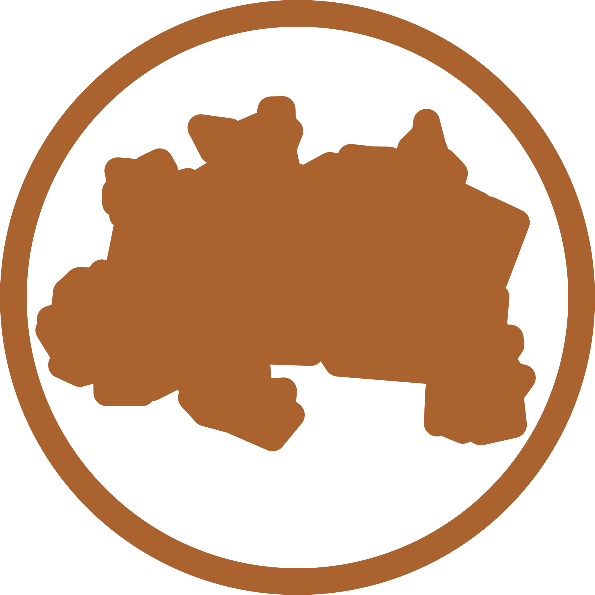

Região Norte
A Região Norte é uma das cinco regiões do Brasil definidas pelo Instituto Brasileiro de Geografia e Estatística (IBGE) em 1969. Com uma área de 3 853 676,948 km² - a maior entre as cinco regiões - cobre 45,25% do território nacional,[3] sendo superior à área da Índia e pouco inferior à União Europeia. Se fosse um país, seria o 7º maior do mundo em área. Sua população, também de acordo com o Instituto Brasileiro de Geografia e Estatística (IBGE), era de 18,4 milhões de habitantes em 2019, equivalente à população do Cazaquistão.[6] Seu Índice de Desenvolvimento Humano (IDH), de 0,730,[5] é considerado alto e, em comparação com as outras regiões brasileiras, tem o segundo menor IDH, superando apenas a Região Nordeste.
É formada por sete estados, sendo estes: Acre, Amapá, Amazonas, Pará, Rondônia, Roraima e Tocantins. Suas maiores e principais cidades são Manaus e Belém, as únicas na macrorregião que possuem população superior a um milhão de habitantes. Porto Velho, Macapá, Palmas, Rio Branco e Boa Vista são outros importantes centros regionais. Está localizada na região geoeconômica da Amazônia, entre o Maciço das Guianas (ao norte), o planalto Central (ao sul), a Cordilheira dos Andes (a oeste) e o oceano Atlântico (a nordeste). O clima predominante na região é o equatorial, além de algumas regiões de clima tropical. A região é dominada por um importante ecossistema para o planeta: a Amazônia. Registra-se também, pequenas faixas de mangue no litoral, alguns pontos de cerrado e também alguns pontos de matas galerias. A latitude e o relevo explicam a temperatura; a temperatura e os ventos explicam a umidade e o volume dos rios; e o clima e a umidade, somados, são responsáveis pela existência da mais extensa, variada e densa floresta do planeta, ou seja, a Floresta Amazônica.
A região abriga os dois maiores estados em território no país, Amazonas e Pará. Além destes, os dez maiores municípios em área territorial (quatro no estado do Pará e seis no estado do Amazonas), também estão situados na Região Norte. Outros feitos também são congratulados, como a capital brasileira com maior área,[7] Porto Velho, o segundo rio mais extenso do mundo, Rio Amazonas[nota 1], e o ponto culminante do Brasil, o Pico da Neblina.
História
Os primeiros habitantes da Região Norte, como no resto do Brasil, foram os indígenas, que compartilhavam uma diversificada quantidade de tribos e aldeias, do período pré-colombiano até a chegada dos europeus.[14] Os espanhóis, entre eles Francisco de Orellana, organizaram expedições exploradoras pelo rio Amazonas para conhecer a região. Após longas viagens ao lado de Francisco Orellana, Gonzalo Fernández de Oviedo y Valdés escreveu, em Veneza, uma carta dirigida ao cardeal Pedro Bembo, exaltando a fauna e a flora existentes na região à época da expedição.
O século XVII marca a chegada dos portugueses ao local, onde construíram fortes militares para defender a região contra a invasão de outros povos, em 1616, ocasionando na fundação de Belém.[14] As riquezas da Floresta Amazônica também passaram a ser de interesse da Coroa Portuguesa.[14] Com os exploradores portugueses, vieram os missionários católicos para a região, com o objetivo de catequizar os índios. Os índios eram reunidos pelos missionários em aldeias, chamadas de missões, sendo que muitas delas deram origem a várias cidades, como Borba e Óbidos.
Os brasileiros de outros estados, principalmente nordestinos, vieram para a Região Norte a fim de trabalhar na extração da borracha. Muitas famílias japonesas vieram trabalhar nas colônias agrícolas. Os japoneses iniciaram a plantação da pimenta-do-reino e da juta.
Durante as décadas de 60, 70 e 80, os governos militares implantaram um grande plano de integração dessa região com as demais regiões do Brasil, incluindo a construção de várias rodovias (como a rodovia Transamazônica), instalação de indústrias e a criação da zona franca de Manaus.
Povoamento
A divisão territorial em países não coincide, necessariamente, com a ocupação indígena do espaço geográfico; em muitos casos, há povos que vivem dos dois lados de fronteiras internacionais, criadas muito depois de eles já estarem na região. Os habitantes da Amazônia, desde o início da colonização do século XVII até os presentes dias, dedicaram-se a atividades extrativistas e mercantilistas, inserindo entre 1840 e 1910, o monopólio da borracha, principalmente no Amazonas e Acre. Todo esse processo de colonização gerou mudanças como a redução da população indígena, aumento da identidade cabocla, mestiçagem entre brancos, negros e indígenas, redução de espécies de plantas e animais e outras consequências.
Vários personagens surgiram da miscigenação de povos que trabalharam nas terras amazônicas como os caboclos, os ribeirinhos, os seringueiros e o balateiros, que até hoje residem no local e constituem a maior parte da população.
Após a Segunda Guerra Mundial, a Amazônia passou a integrar o processo de desenvolvimento nacional. A criação do Instituto Nacional de Pesquisa da Amazônia (INPA) em 1952, a implantação das agências de desenvolvimento regional como a Superintendência de Desenvolvimento da Amazônia (SUDAM) em 1966 e a Zona Franca de Manaus, em 1967, passaram a contribuir no povoamento da região e na execução de projetos voltados para a região.
Turismo
Por ser uma região pouco habitada e de ocupação mais tardia, o ecossistema regional encontra-se preservado, o que propicia as atividades de ecoturismo.
| Manaus | Parintins | Boa Vista | Rio Branco |
| Itacoatiara | Iranduba | Maués | Presidente Figueiredo |
| Belém | Santarém | Macapá | Porto Velho |
| Palmas | Salinópolis | Marabá | Bragança |
Manaus foi uma das primeiras cidades brasileiras a possuir o AmazonBus, veículo oferecido aos turistas que visitam à cidade aos moldes de veículos turísticos que já operam em cerca de setenta cidades turísticas do exterior. O AmazonBus percorre 40 pontos turísticos manauenses. Dentre os incluídos no roteiro, estão o Teatro Amazonas e a Praia da Ponta Negra.
Cultura
Com folclore próprio, as grandes atrações são o Festival Folclórico de Parintins, o Círio de Nazaré, em Belém/PA, o Çairé, em Santarém/PA e as danças típicas, Marujada, Carimbó e Cirandas, como Samba lelê e outros.
Na região estão alguns dos teatros mais belos do Brasil, que são: Teatro Amazonas, localizado em Manaus e o Theatro da Paz, localizado em Belém. Uma mistura da arte barroca, rococó e outras artes além de ser o principal símbolo do áureo da borracha, na época em que Manaus e Belém eram as localidades mais ricas do Brasil.
Literatura
| José Veríssimo |
| Inglês de Sousa |
| Dalcídio Jurandir |
| Antônio Tavernard |
| Benedicto Monteiro |
| Milton Hatoum |
| Thiago de Mello |
Apesar de ser uma região com muita diversidade cultural, tendo grandes festas tradicionais, danças, manifestações artísticas, como o Bumba Meu Boi e a Festa do Divino, e muitas crenças, o norte do Brasil ainda enfrenta grandes desafios quando o assunto é educação, principalmente no que se refere à educação básica. De certa forma, esta falta de acesso à educação de qualidade tornou a literatura do norte pouco conhecida e disseminada pelo país.
Entretanto, a Região Norte tem sim uma produção literária rica e regionalista, que expressa a vida em contato com a floresta, a natureza e os índios. A literatura da região norte também fala bastante sobre seus rumos históricos e políticos, com destaque para os atos do Brasil Império que influenciaram o desenvolvimento do norte.
A literatura do norte também é marcada por muitas lendas e causos que têm grande influência indígena, como a Iara, o Curupira e a Lenda do Boto-cor-de-rosa. Na literatura formal, um dos principais livros da região norte é “Cenas da Vida Amazônica”, escrito pelo crítico e autor literário José Veríssimo.
Outra obra que retrata bem a região é o livro de Evaldo Cabral de Mello “O Norte Agrário e o Império: 1871–1889”. Podemos dizer que os principais autores da região norte são: José Veríssimo, Inglês de Sousa, Dalcídio Jurandir, Antônio Tavernard e Benedicto Monteiro.
Culinária
A cultura gastronômica da região norte do Brasil é bastante rica, possui raízes indígenas, africanas e portuguesas, além de outras influencias tanto internas do Brasil quanto de outras culturas fora do país, a forte influência indígena amazônica em seus principais pratos é notável, dentre os principais destaca-se iguarias como o pato no tucupi, maniçoba, tacacá, um cardápio de grande variedade de especies de peixes amazônicos, como o pirarucu, tambaqui, o jaú, piramutaba entre outras espécies, um enorme cardápio de frutas, como o açaí, a pupunha, tucumã, o cupuaçu, o buriti, abiu, urucu, cumaru, ingá entre outras frutas, toda a região possui uma variedade rica de ingredientes, mas também alimentos a base de macaxeira como a farinha d'água, farinha do uarini, farinha de tapioca, goma de tapioca, o tucupi, entre outros.
Economia
A economia da região baseia-se nas atividades industriais, de extrativismo vegetal e mineral, inclusive de petróleo e gás natural, agricultura e pecuária, além das atividades turísticas.
Em 2010 o Produto Interno Bruto (PIB) da Região Norte representava 5,3% do PIB nacional.[26] Foi a região brasileira que apresentou o maior crescimento econômico em um período de oito anos, passando de 4,7% em 2002 a 5,3% em 2010, em concentração do PIB brasileiro.[26] Com um crescimento em volume do PIB de 14,2% e 74,2%, respectivamente, o Tocantins foi o estado que apresentou o maior crescimento em volume.[26] Entretanto, as maiores contribuições econômicas da Região em 2010 continuaram a vir dos estados do Pará, Amazonas e Rondônia.[26] No Pará, destacou-se a recuperação internacional do preço do minério de ferro, que representa um grande peso na economia do estado. O Amazonas apresentou uma grande recuperação da indústria de transformação, seriamente abalada pela crise econômica de 2008. Rondônia, por sua vez, obteve o maior ganho de participação na atividade agropecuária dentre todos os estados entre 2002 e 2010.
Além disso, em âmbito nacional, Amazonas e Rondônia subiram uma posição na Lista de estados brasileiros classificados por PIB. O Amazonas passou de 15º para 14º estado mais rico do país em 2010, ultrapassando o Mato Grosso, que caiu uma posição no referido ano. Rondônia deixou a 23ª posição e passou a ocupar a 22ª, desbancando o Piauí, que também caiu uma posição entre os estados.
Dos sete estados da região, apenas Pará e Amazonas integram o chamado "Grupo Econômico Intermediário", formado por nove estados brasileiros que representam entre 2,6% e 1,2% da economia brasileira. Além do Pará e Amazonas, que representam 2,1% e 1,6%, respectivamente, da economia do país, fazem parte deste grupo os estados de Goiás, Pernambuco, Ceará, Espírito Santo, Mato Grosso, Maranhão e Mato Grosso do Sul.[26] Os demais estados da região representam menos de 1% da economia brasileira. Por ordem, seguem-se os estados de Rondônia (0,6% da economia nacional), Tocantins (0,5%), Acre (0,2%), Amapá (0,2%) e Roraima (0,2%).
Fonte: Wikipedia, 2019.